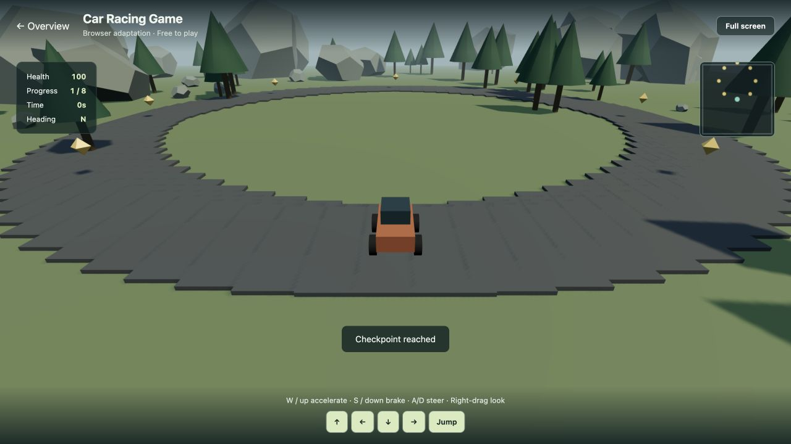

Route navigation
Movement and viewpoint work together to make the space readable. The player uses the controls to choose a route, judge distance, and position the character for the next interaction.
Unreal Engine
A driving game with vehicle control, track navigation, and racing challenges.
Movement and viewpoint work together to make the space readable. The player uses the controls to choose a route, judge distance, and position the character for the next interaction.
Driving connects direction and speed with the route ahead. Course geometry and checkpoints turn vehicle control into a sequence of spatial and timing decisions.
This part of the project contributes to the core interaction described above. Its role is presented through the project’s available interface, source, and visual preview.
Drive the circuit and pass through all eight checkpoint markers. Independent browser adaptation of the project concept, built with JavaScript and WebGL. This is not a packaged Unreal Engine build.
W / up accelerate · S / down brake · A/D steer · Right-drag look


Project reference preview; recovered build not verified.